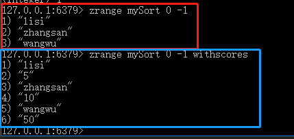

009-redis之sortedset类型
不允许重复，有序
1、存储
语法: zadd <key> <score> <value>
添加key变量，权重是score，redis会根据score将数据升序排列
zadd mySort 10 zhangsan
zadd mySort 5 lisi
zadd mySort 50 wangwu
2、获取
语法: zrange <key> <start> <end> [withscores]
加上参数withscores则会将权重分数一起打印出来
zrange mySort 0 -1
zrange mySort 0 -1 withscores

3、删除
语法: zrem <key> <value>
把key中的value删除
zrem mySort lisi